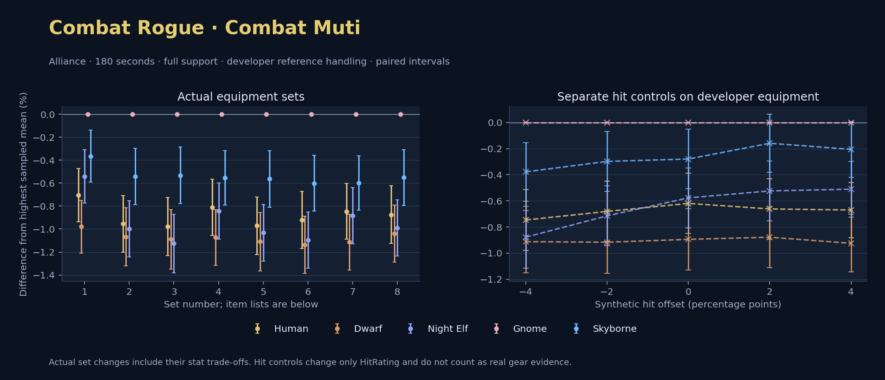

Alliance · Human / Dwarf / Night Elf / Gnome / Skyborne

No pet or guardian appears in the reference combat metrics. Reference: Human, developer equipment, 180 seconds and full support. Pet choices remain those of the developer build.
WoWSims developer · Mutilate
Unimplemented enchant or active set effects: [{"id": 1676, "pieces": 3, "effects": ["Restores 15 health per 5 sec."]}, {"id": 1676, "pieces": 5, "effects": ["When struck in combat, has a 5% chance to remove a Snare effect from yourself. Can only occur once every 60 sec."]}]
Unmeasured proc rates: [{"source": "set", "id": 1676, "pieces": 4, "kind": "ppm", "origin": "unknown"}, {"source": "item", "id": 19324, "name": "The Lobotomizer", "kind": "ppm", "origin": "vanilla"}, {"source": "enchant", "id": 1900, "name": "Enchant Weapon - Crusader", "kind": "ppm", "origin": "vanilla"}]
180 seconds, full support and original developer references. Hit below is generic sheet melee / spell hit; school and talent bonuses can be attached directly to spells.
| Race | DPS | Gap and interval | Generic hit | Replay |
|---|---|---|---|---|
| Gnome | 668.19 | +0.000% ± 0.000 | 13.4% / 13.4% | Native input · Website JSON |
| Skyborne | 665.76 | -0.364% ± 0.225 | 13.4% / 13.4% | Native input · Website JSON |
| Night Elf | 664.58 | -0.541% ± 0.231 | 13.4% / 13.4% | Native input · Website JSON |
| Human | 663.49 | -0.704% ± 0.231 | 13.4% / 13.4% | Native input · Website JSON |
| Dwarf | 661.65 | -0.979% ± 0.232 | 14.4% / 14.4% | Native input · Website JSON |
| Slot | Item | ID | Enchant |
|---|---|---|---|
| Head | Darkmantle Cap | 226829 | Lesser Arcane Amalgamation |
| Neck | Beads of Ogre Might | 22150 | |
| Shoulder | Theramore Pauldrons | 271955 | |
| Back | Earthweave Cloak | 21187 | Enchant Cloak - Agility |
| Chest | Darkmantle Tunic | 226825 | Enchant Chest - Living Stats |
| Wrist | Darkmantle Bracers | 226830 | Enchant Bracer - Agility |
| Hands | Darkmantle Grips | 226828 | Enchant Gloves - Greater Agility |
| Waist | Assassin's Waistguard | 272395 | |
| Legs | Darkmantle Pants | 226827 | Lesser Arcane Amalgamation |
| Feet | Darkmantle Footpads | 226831 | Enchant Boots - Minor Speed |
| Ring 1 | Don Julio's Band | 19325 | |
| Ring 2 | Might of Cenarius | 21189 | |
| Trinket 1 | Adaptive Combat Assistant | 272437 | |
| Trinket 2 | Rune of the Guard Captain | 19120 | |
| Main hand | The Lobotomizer | 19324 | Enchant Weapon - Crusader |
| Off hand | Scarlet Kris | 5267 | Enchant Weapon - Agility |
| Ranged / relic | Fahrad's Reloading Repeater | 22347 |
Published ranked alternatives · Published pre-raid
Recorded source replacements: [{"slot": "head", "from": 11735, "to": 252482, "publishedAlternativeRank": 1, "publishedEpDelta": -3.8, "reason": "First published alternative compatible with the current WoWSims database, class, faction and occupied slots."}, {"slot": "back", "from": 13340, "to": 18511, "publishedAlternativeRank": 1, "publishedEpDelta": -16, "reason": "First published alternative compatible with the current WoWSims database, class, faction and occupied slots."}, {"slot": "finger2", "from": 9533, "to": 285190, "publishedAlternativeRank": 2, "publishedEpDelta": -2.6, "reason": "First published alternative compatible with the current WoWSims database, class, faction and occupied slots."}, {"slot": "trinket2", "from": 13171, "to": 274759, "publishedAlternativeRank": 1, "publishedEpDelta": -1.4, "reason": "First published alternative compatible with the current WoWSims database, class, faction and occupied slots."}, {"slot": "ranged", "from": 2100, "to": 13023, "publishedAlternativeRank": 1, "publishedEpDelta": -3.6, "reason": "First published alternative compatible with the current WoWSims database, class, faction and occupied slots."}]
Unimplemented enchant or active set effects: [{"id": 143, "pieces": 2, "effects": ["Improves your chance to hit by 2.0%."]}]
Unmeasured proc rates: [{"source": "enchant", "id": 1900, "name": "Enchant Weapon - Crusader", "kind": "ppm", "origin": "vanilla"}, {"source": "enchant", "id": 1900, "name": "Enchant Weapon - Crusader", "kind": "ppm", "origin": "vanilla"}]
180 seconds, full support and original developer references. Hit below is generic sheet melee / spell hit; school and talent bonuses can be attached directly to spells.
| Race | DPS | Gap and interval | Generic hit | Replay |
|---|---|---|---|---|
| Gnome | 615.16 | +0.000% ± 0.000 | 7.5% / 7.5% | Native input · Website JSON |
| Skyborne | 611.83 | -0.541% ± 0.246 | 7.5% / 7.5% | Native input · Website JSON |
| Human | 609.28 | -0.955% ± 0.247 | 7.5% / 7.5% | Native input · Website JSON |
| Night Elf | 609.02 | -0.997% ± 0.245 | 7.5% / 7.5% | Native input · Website JSON |
| Dwarf | 608.58 | -1.068% ± 0.252 | 8.5% / 8.5% | Native input · Website JSON |
| Slot | Item | ID | Enchant |
|---|---|---|---|
| Head | Blue Suede Hat | 252482 | Lesser Arcane Amalgamation |
| Neck | Skibi's Pendant | 13089 | Enchant Necklace - Agility |
| Shoulder | Shadowcraft Spaulders | 16708 | |
| Back | Shifting Cloak | 18511 | Enchant Cloak - Agility |
| Chest | Dawn Armor | 252483 | Enchant Chest - Greater Stats |
| Wrist | Shadowcraft Bracers | 16710 | Enchant Bracer - Agility |
| Hands | Devilsaur Gauntlets | 15063 | Enchant Gloves - Greater Agility |
| Waist | Assassin's Waistguard | 272395 | |
| Legs | Devilsaur Leggings | 15062 | Lesser Arcane Amalgamation |
| Feet | Shadowcraft Boots | 16711 | Enchant Boots - Greater Agility |
| Ring 1 | Cutthroat's Signet | 272408 | |
| Ring 2 | Wyvern Heart Band | 285190 | |
| Trinket 1 | Adaptive Combat Assistant | 272437 | |
| Trinket 2 | Everlook Pathcarver | 274759 | |
| Main hand | Heartseeker | 12783 | Enchant Weapon - Crusader |
| Off hand | Scarlet Kris | 5267 | Enchant Weapon - Crusader |
| Ranged / relic | Eaglehorn Long Bow | 13023 |
Published one-slot hit alternative · Published pre-raid
One source-listed alternative; at least 80% of the source slot score retained. Reported hit selects the contrast; only native stats determine simulation outcomes. This is an experimental combination, not an endorsed best set.
Recorded source replacements: [{"slot": "head", "from": 11735, "to": 252482, "publishedAlternativeRank": 1, "publishedEpDelta": -3.8, "reason": "First published alternative compatible with the current WoWSims database, class, faction and occupied slots."}, {"slot": "back", "from": 13340, "to": 18511, "publishedAlternativeRank": 1, "publishedEpDelta": -16, "reason": "First published alternative compatible with the current WoWSims database, class, faction and occupied slots."}, {"slot": "finger2", "from": 9533, "to": 285190, "publishedAlternativeRank": 2, "publishedEpDelta": -2.6, "reason": "First published alternative compatible with the current WoWSims database, class, faction and occupied slots."}, {"slot": "trinket2", "from": 13171, "to": 274759, "publishedAlternativeRank": 1, "publishedEpDelta": -1.4, "reason": "First published alternative compatible with the current WoWSims database, class, faction and occupied slots."}, {"slot": "ranged", "from": 2100, "to": 13023, "publishedAlternativeRank": 1, "publishedEpDelta": -3.6, "reason": "First published alternative compatible with the current WoWSims database, class, faction and occupied slots."}]
Unimplemented enchant or active set effects: [{"id": 143, "pieces": 2, "effects": ["Improves your chance to hit by 2.0%."]}]
Unmeasured proc rates: [{"source": "enchant", "id": 1900, "name": "Enchant Weapon - Crusader", "kind": "ppm", "origin": "vanilla"}, {"source": "enchant", "id": 1900, "name": "Enchant Weapon - Crusader", "kind": "ppm", "origin": "vanilla"}]
180 seconds, full support and original developer references. Hit below is generic sheet melee / spell hit; school and talent bonuses can be attached directly to spells.
| Race | DPS | Gap and interval | Generic hit | Replay |
|---|---|---|---|---|
| Gnome | 606.38 | +0.000% ± 0.000 | 5.5% / 5.5% | Native input · Website JSON |
| Skyborne | 603.15 | -0.533% ± 0.247 | 5.5% / 5.5% | Native input · Website JSON |
| Human | 600.44 | -0.979% ± 0.253 | 5.5% / 5.5% | Native input · Website JSON |
| Dwarf | 599.77 | -1.089% ± 0.258 | 6.5% / 6.5% | Native input · Website JSON |
| Night Elf | 599.55 | -1.126% ± 0.254 | 5.5% / 5.5% | Native input · Website JSON |
| Slot | Item | ID | Enchant |
|---|---|---|---|
| Head | Blue Suede Hat | 252482 | Lesser Arcane Amalgamation |
| Neck | Skibi's Pendant | 13089 | Enchant Necklace - Agility |
| Shoulder | Shadowcraft Spaulders | 16708 | |
| Back | Shifting Cloak | 18511 | Enchant Cloak - Agility |
| Chest | Dawn Armor | 252483 | Enchant Chest - Greater Stats |
| Wrist | Shadowcraft Bracers | 16710 | Enchant Bracer - Agility |
| Hands | Devilsaur Gauntlets | 15063 | Enchant Gloves - Greater Agility |
| Waist | Might of the Timbermaw | 19044 | |
| Legs | Devilsaur Leggings | 15062 | Lesser Arcane Amalgamation |
| Feet | Shadowcraft Boots | 16711 | Enchant Boots - Greater Agility |
| Ring 1 | Cutthroat's Signet | 272408 | |
| Ring 2 | Wyvern Heart Band | 285190 | |
| Trinket 1 | Adaptive Combat Assistant | 272437 | |
| Trinket 2 | Everlook Pathcarver | 274759 | |
| Main hand | Heartseeker | 12783 | Enchant Weapon - Crusader |
| Off hand | Scarlet Kris | 5267 | Enchant Weapon - Crusader |
| Ranged / relic | Eaglehorn Long Bow | 13023 |
Published one-slot hit alternative · Published pre-raid
One source-listed alternative; at least 80% of the source slot score retained. Reported hit selects the contrast; only native stats determine simulation outcomes. This is an experimental combination, not an endorsed best set.
Recorded source replacements: [{"slot": "head", "from": 11735, "to": 252482, "publishedAlternativeRank": 1, "publishedEpDelta": -3.8, "reason": "First published alternative compatible with the current WoWSims database, class, faction and occupied slots."}, {"slot": "back", "from": 13340, "to": 18511, "publishedAlternativeRank": 1, "publishedEpDelta": -16, "reason": "First published alternative compatible with the current WoWSims database, class, faction and occupied slots."}, {"slot": "finger2", "from": 9533, "to": 285190, "publishedAlternativeRank": 2, "publishedEpDelta": -2.6, "reason": "First published alternative compatible with the current WoWSims database, class, faction and occupied slots."}, {"slot": "trinket2", "from": 13171, "to": 274759, "publishedAlternativeRank": 1, "publishedEpDelta": -1.4, "reason": "First published alternative compatible with the current WoWSims database, class, faction and occupied slots."}, {"slot": "ranged", "from": 2100, "to": 13023, "publishedAlternativeRank": 1, "publishedEpDelta": -3.6, "reason": "First published alternative compatible with the current WoWSims database, class, faction and occupied slots."}]
Unimplemented enchant or active set effects: [{"id": 143, "pieces": 2, "effects": ["Improves your chance to hit by 2.0%."]}]
Unmeasured proc rates: [{"source": "enchant", "id": 1900, "name": "Enchant Weapon - Crusader", "kind": "ppm", "origin": "vanilla"}, {"source": "enchant", "id": 1900, "name": "Enchant Weapon - Crusader", "kind": "ppm", "origin": "vanilla"}]
180 seconds, full support and original developer references. Hit below is generic sheet melee / spell hit; school and talent bonuses can be attached directly to spells.
| Race | DPS | Gap and interval | Generic hit | Replay |
|---|---|---|---|---|
| Gnome | 618.87 | +0.000% ± 0.000 | 8.5% / 8.5% | Native input · Website JSON |
| Skyborne | 615.43 | -0.555% ± 0.236 | 8.5% / 8.5% | Native input · Website JSON |
| Human | 613.85 | -0.811% ± 0.243 | 8.5% / 8.5% | Native input · Website JSON |
| Night Elf | 613.65 | -0.843% ± 0.244 | 8.5% / 8.5% | Native input · Website JSON |
| Dwarf | 612.22 | -1.073% ± 0.243 | 9.5% / 9.5% | Native input · Website JSON |
| Slot | Item | ID | Enchant |
|---|---|---|---|
| Head | Blue Suede Hat | 252482 | Lesser Arcane Amalgamation |
| Neck | Skibi's Pendant | 13089 | Enchant Necklace - Agility |
| Shoulder | Shadowcraft Spaulders | 16708 | |
| Back | Howler's Furs | 272414 | Enchant Cloak - Agility |
| Chest | Dawn Armor | 252483 | Enchant Chest - Greater Stats |
| Wrist | Shadowcraft Bracers | 16710 | Enchant Bracer - Agility |
| Hands | Devilsaur Gauntlets | 15063 | Enchant Gloves - Greater Agility |
| Waist | Assassin's Waistguard | 272395 | |
| Legs | Devilsaur Leggings | 15062 | Lesser Arcane Amalgamation |
| Feet | Shadowcraft Boots | 16711 | Enchant Boots - Greater Agility |
| Ring 1 | Cutthroat's Signet | 272408 | |
| Ring 2 | Wyvern Heart Band | 285190 | |
| Trinket 1 | Adaptive Combat Assistant | 272437 | |
| Trinket 2 | Everlook Pathcarver | 274759 | |
| Main hand | Heartseeker | 12783 | Enchant Weapon - Crusader |
| Off hand | Scarlet Kris | 5267 | Enchant Weapon - Crusader |
| Ranged / relic | Eaglehorn Long Bow | 13023 |
Published ranked alternatives · Published pre-raid
Recorded source replacements: [{"slot": "head", "from": 11735, "to": 252482, "publishedAlternativeRank": 1, "publishedEpDelta": -3.8, "reason": "First published alternative compatible with the current WoWSims database, class, faction and occupied slots."}, {"slot": "back", "from": 13340, "to": 18511, "publishedAlternativeRank": 1, "publishedEpDelta": -16, "reason": "First published alternative compatible with the current WoWSims database, class, faction and occupied slots."}, {"slot": "hands", "from": 227809, "to": 15063, "publishedAlternativeRank": 1, "publishedEpDelta": -11.4, "reason": "First published alternative compatible with the current WoWSims database, class, faction and occupied slots."}, {"slot": "finger2", "from": 17713, "to": 285190, "publishedAlternativeRank": 2, "publishedEpDelta": -8.3, "reason": "First published alternative compatible with the current WoWSims database, class, faction and occupied slots."}, {"slot": "ranged", "from": 2100, "to": 13023, "publishedAlternativeRank": 1, "publishedEpDelta": -3.6, "reason": "First published alternative compatible with the current WoWSims database, class, faction and occupied slots."}]
Unimplemented enchant or active set effects: [{"id": 143, "pieces": 2, "effects": ["Improves your chance to hit by 2.0%."]}]
Unmeasured proc rates: [{"source": "enchant", "id": 1900, "name": "Enchant Weapon - Crusader", "kind": "ppm", "origin": "vanilla"}, {"source": "enchant", "id": 1900, "name": "Enchant Weapon - Crusader", "kind": "ppm", "origin": "vanilla"}]
180 seconds, full support and original developer references. Hit below is generic sheet melee / spell hit; school and talent bonuses can be attached directly to spells.
| Race | DPS | Gap and interval | Generic hit | Replay |
|---|---|---|---|---|
| Gnome | 618.10 | +0.000% ± 0.000 | 7.5% / 7.5% | Native input · Website JSON |
| Skyborne | 614.62 | -0.563% ± 0.246 | 7.5% / 7.5% | Native input · Website JSON |
| Human | 612.10 | -0.972% ± 0.249 | 7.5% / 7.5% | Native input · Website JSON |
| Night Elf | 611.72 | -1.032% ± 0.246 | 7.5% / 7.5% | Native input · Website JSON |
| Dwarf | 611.24 | -1.110% ± 0.254 | 8.5% / 8.5% | Native input · Website JSON |
| Slot | Item | ID | Enchant |
|---|---|---|---|
| Head | Blue Suede Hat | 252482 | Lesser Arcane Amalgamation |
| Neck | Skibi's Pendant | 13089 | Enchant Necklace - Agility |
| Shoulder | Shadowcraft Spaulders | 16708 | |
| Back | Shifting Cloak | 18511 | Enchant Cloak - Agility |
| Chest | Dawn Armor | 252483 | Enchant Chest - Greater Stats |
| Wrist | Shadowcraft Bracers | 16710 | Enchant Bracer - Agility |
| Hands | Devilsaur Gauntlets | 15063 | Enchant Gloves - Greater Agility |
| Waist | Assassin's Waistguard | 272395 | |
| Legs | Devilsaur Leggings | 15062 | Lesser Arcane Amalgamation |
| Feet | Shadowcraft Boots | 16711 | Enchant Boots - Greater Agility |
| Ring 1 | Cutthroat's Signet | 272408 | |
| Ring 2 | Wyvern Heart Band | 285190 | |
| Trinket 1 | Adaptive Combat Assistant | 272437 | |
| Trinket 2 | Molten Heart of the Mountain | 249470 | |
| Main hand | Heartseeker | 12783 | Enchant Weapon - Crusader |
| Off hand | Scarlet Kris | 5267 | Enchant Weapon - Crusader |
| Ranged / relic | Eaglehorn Long Bow | 13023 |
Published one-slot hit alternative · Published pre-raid
One source-listed alternative; at least 80% of the source slot score retained. Reported hit selects the contrast; only native stats determine simulation outcomes. This is an experimental combination, not an endorsed best set.
Recorded source replacements: [{"slot": "head", "from": 11735, "to": 252482, "publishedAlternativeRank": 1, "publishedEpDelta": -3.8, "reason": "First published alternative compatible with the current WoWSims database, class, faction and occupied slots."}, {"slot": "back", "from": 13340, "to": 18511, "publishedAlternativeRank": 1, "publishedEpDelta": -16, "reason": "First published alternative compatible with the current WoWSims database, class, faction and occupied slots."}, {"slot": "hands", "from": 227809, "to": 15063, "publishedAlternativeRank": 1, "publishedEpDelta": -11.4, "reason": "First published alternative compatible with the current WoWSims database, class, faction and occupied slots."}, {"slot": "finger2", "from": 17713, "to": 285190, "publishedAlternativeRank": 2, "publishedEpDelta": -8.3, "reason": "First published alternative compatible with the current WoWSims database, class, faction and occupied slots."}, {"slot": "ranged", "from": 2100, "to": 13023, "publishedAlternativeRank": 1, "publishedEpDelta": -3.6, "reason": "First published alternative compatible with the current WoWSims database, class, faction and occupied slots."}]
Unimplemented enchant or active set effects: [{"id": 143, "pieces": 2, "effects": ["Improves your chance to hit by 2.0%."]}]
Unmeasured proc rates: [{"source": "enchant", "id": 1900, "name": "Enchant Weapon - Crusader", "kind": "ppm", "origin": "vanilla"}, {"source": "enchant", "id": 1900, "name": "Enchant Weapon - Crusader", "kind": "ppm", "origin": "vanilla"}]
180 seconds, full support and original developer references. Hit below is generic sheet melee / spell hit; school and talent bonuses can be attached directly to spells.
| Race | DPS | Gap and interval | Generic hit | Replay |
|---|---|---|---|---|
| Gnome | 612.55 | +0.000% ± 0.000 | 6.5% / 6.5% | Native input · Website JSON |
| Skyborne | 608.87 | -0.601% ± 0.242 | 6.5% / 6.5% | Native input · Website JSON |
| Human | 606.91 | -0.920% ± 0.250 | 6.5% / 6.5% | Native input · Website JSON |
| Night Elf | 605.84 | -1.094% ± 0.245 | 6.5% / 6.5% | Native input · Website JSON |
| Dwarf | 605.58 | -1.137% ± 0.248 | 7.5% / 7.5% | Native input · Website JSON |
| Slot | Item | ID | Enchant |
|---|---|---|---|
| Head | Blue Suede Hat | 252482 | Lesser Arcane Amalgamation |
| Neck | Skibi's Pendant | 13089 | Enchant Necklace - Agility |
| Shoulder | Shadowcraft Spaulders | 16708 | |
| Back | Shifting Cloak | 18511 | Enchant Cloak - Agility |
| Chest | Timbermaw Tunic | 252484 | Enchant Chest - Greater Stats |
| Wrist | Shadowcraft Bracers | 16710 | Enchant Bracer - Agility |
| Hands | Devilsaur Gauntlets | 15063 | Enchant Gloves - Greater Agility |
| Waist | Assassin's Waistguard | 272395 | |
| Legs | Devilsaur Leggings | 15062 | Lesser Arcane Amalgamation |
| Feet | Shadowcraft Boots | 16711 | Enchant Boots - Greater Agility |
| Ring 1 | Cutthroat's Signet | 272408 | |
| Ring 2 | Wyvern Heart Band | 285190 | |
| Trinket 1 | Adaptive Combat Assistant | 272437 | |
| Trinket 2 | Molten Heart of the Mountain | 249470 | |
| Main hand | Heartseeker | 12783 | Enchant Weapon - Crusader |
| Off hand | Scarlet Kris | 5267 | Enchant Weapon - Crusader |
| Ranged / relic | Eaglehorn Long Bow | 13023 |
Published one-slot hit alternative · Published pre-raid
One source-listed alternative; at least 80% of the source slot score retained. Reported hit selects the contrast; only native stats determine simulation outcomes. This is an experimental combination, not an endorsed best set.
Recorded source replacements: [{"slot": "head", "from": 11735, "to": 252482, "publishedAlternativeRank": 1, "publishedEpDelta": -3.8, "reason": "First published alternative compatible with the current WoWSims database, class, faction and occupied slots."}, {"slot": "back", "from": 13340, "to": 18511, "publishedAlternativeRank": 1, "publishedEpDelta": -16, "reason": "First published alternative compatible with the current WoWSims database, class, faction and occupied slots."}, {"slot": "hands", "from": 227809, "to": 15063, "publishedAlternativeRank": 1, "publishedEpDelta": -11.4, "reason": "First published alternative compatible with the current WoWSims database, class, faction and occupied slots."}, {"slot": "finger2", "from": 17713, "to": 285190, "publishedAlternativeRank": 2, "publishedEpDelta": -8.3, "reason": "First published alternative compatible with the current WoWSims database, class, faction and occupied slots."}, {"slot": "ranged", "from": 2100, "to": 13023, "publishedAlternativeRank": 1, "publishedEpDelta": -3.6, "reason": "First published alternative compatible with the current WoWSims database, class, faction and occupied slots."}]
Unimplemented enchant or active set effects: [{"id": 143, "pieces": 2, "effects": ["Improves your chance to hit by 2.0%."]}]
Unmeasured proc rates: [{"source": "enchant", "id": 1900, "name": "Enchant Weapon - Crusader", "kind": "ppm", "origin": "vanilla"}, {"source": "enchant", "id": 1900, "name": "Enchant Weapon - Crusader", "kind": "ppm", "origin": "vanilla"}]
180 seconds, full support and original developer references. Hit below is generic sheet melee / spell hit; school and talent bonuses can be attached directly to spells.
| Race | DPS | Gap and interval | Generic hit | Replay |
|---|---|---|---|---|
| Gnome | 621.78 | +0.000% ± 0.000 | 8.5% / 8.5% | Native input · Website JSON |
| Skyborne | 618.06 | -0.597% ± 0.237 | 8.5% / 8.5% | Native input · Website JSON |
| Human | 616.52 | -0.846% ± 0.243 | 8.5% / 8.5% | Native input · Website JSON |
| Night Elf | 616.28 | -0.884% ± 0.243 | 8.5% / 8.5% | Native input · Website JSON |
| Dwarf | 614.85 | -1.114% ± 0.242 | 9.5% / 9.5% | Native input · Website JSON |
| Slot | Item | ID | Enchant |
|---|---|---|---|
| Head | Blue Suede Hat | 252482 | Lesser Arcane Amalgamation |
| Neck | Skibi's Pendant | 13089 | Enchant Necklace - Agility |
| Shoulder | Shadowcraft Spaulders | 16708 | |
| Back | Howler's Furs | 272414 | Enchant Cloak - Agility |
| Chest | Dawn Armor | 252483 | Enchant Chest - Greater Stats |
| Wrist | Shadowcraft Bracers | 16710 | Enchant Bracer - Agility |
| Hands | Devilsaur Gauntlets | 15063 | Enchant Gloves - Greater Agility |
| Waist | Assassin's Waistguard | 272395 | |
| Legs | Devilsaur Leggings | 15062 | Lesser Arcane Amalgamation |
| Feet | Shadowcraft Boots | 16711 | Enchant Boots - Greater Agility |
| Ring 1 | Cutthroat's Signet | 272408 | |
| Ring 2 | Wyvern Heart Band | 285190 | |
| Trinket 1 | Adaptive Combat Assistant | 272437 | |
| Trinket 2 | Molten Heart of the Mountain | 249470 | |
| Main hand | Heartseeker | 12783 | Enchant Weapon - Crusader |
| Off hand | Scarlet Kris | 5267 | Enchant Weapon - Crusader |
| Ranged / relic | Eaglehorn Long Bow | 13023 |
Published one-slot hit alternative · Published pre-raid
One source-listed alternative; at least 80% of the source slot score retained. Reported hit selects the contrast; only native stats determine simulation outcomes. This is an experimental combination, not an endorsed best set.
Recorded source replacements: [{"slot": "head", "from": 11735, "to": 252482, "publishedAlternativeRank": 1, "publishedEpDelta": -3.8, "reason": "First published alternative compatible with the current WoWSims database, class, faction and occupied slots."}, {"slot": "back", "from": 13340, "to": 272414, "publishedAlternativeRank": 1, "publishedEpDelta": -8.2, "reason": "First published alternative compatible with the current WoWSims database, class, faction and occupied slots."}, {"slot": "hands", "from": 227809, "to": 15063, "publishedAlternativeRank": 1, "publishedEpDelta": -3.5, "reason": "First published alternative compatible with the current WoWSims database, class, faction and occupied slots."}, {"slot": "waist", "from": 227805, "to": 272395, "publishedAlternativeRank": 1, "publishedEpDelta": -2.3, "reason": "First published alternative compatible with the current WoWSims database, class, faction and occupied slots."}, {"slot": "finger2", "from": 17713, "to": 285190, "publishedAlternativeRank": 2, "publishedEpDelta": -16.1, "reason": "First published alternative compatible with the current WoWSims database, class, faction and occupied slots."}, {"slot": "ranged", "from": 2100, "to": 13023, "publishedAlternativeRank": 1, "publishedEpDelta": -3.6, "reason": "First published alternative compatible with the current WoWSims database, class, faction and occupied slots."}]
Unimplemented enchant or active set effects: [{"id": 143, "pieces": 2, "effects": ["Improves your chance to hit by 2.0%."]}]
Unmeasured proc rates: [{"source": "enchant", "id": 1900, "name": "Enchant Weapon - Crusader", "kind": "ppm", "origin": "vanilla"}, {"source": "enchant", "id": 1900, "name": "Enchant Weapon - Crusader", "kind": "ppm", "origin": "vanilla"}]
180 seconds, full support and original developer references. Hit below is generic sheet melee / spell hit; school and talent bonuses can be attached directly to spells.
| Race | DPS | Gap and interval | Generic hit | Replay |
|---|---|---|---|---|
| Gnome | 613.16 | +0.000% ± 0.000 | 6.5% / 6.5% | Native input · Website JSON |
| Skyborne | 609.78 | -0.551% ± 0.241 | 6.5% / 6.5% | Native input · Website JSON |
| Human | 607.80 | -0.874% ± 0.250 | 6.5% / 6.5% | Native input · Website JSON |
| Night Elf | 607.10 | -0.989% ± 0.244 | 6.5% / 6.5% | Native input · Website JSON |
| Dwarf | 606.78 | -1.040% ± 0.249 | 7.5% / 7.5% | Native input · Website JSON |
| Slot | Item | ID | Enchant |
|---|---|---|---|
| Head | Blue Suede Hat | 252482 | Lesser Arcane Amalgamation |
| Neck | Skibi's Pendant | 13089 | Enchant Necklace - Agility |
| Shoulder | Shadowcraft Spaulders | 16708 | |
| Back | Howler's Furs | 272414 | Enchant Cloak - Agility |
| Chest | Dawn Armor | 252483 | Enchant Chest - Greater Stats |
| Wrist | Shadowcraft Bracers | 16710 | Enchant Bracer - Agility |
| Hands | Devilsaur Gauntlets | 15063 | Enchant Gloves - Greater Agility |
| Waist | Might of the Timbermaw | 19044 | |
| Legs | Devilsaur Leggings | 15062 | Lesser Arcane Amalgamation |
| Feet | Shadowcraft Boots | 16711 | Enchant Boots - Greater Agility |
| Ring 1 | Cutthroat's Signet | 272408 | |
| Ring 2 | Wyvern Heart Band | 285190 | |
| Trinket 1 | Adaptive Combat Assistant | 272437 | |
| Trinket 2 | Molten Heart of the Mountain | 249470 | |
| Main hand | Heartseeker | 12783 | Enchant Weapon - Crusader |
| Off hand | Scarlet Kris | 5267 | Enchant Weapon - Crusader |
| Ranged / relic | Eaglehorn Long Bow | 13023 |
The same declared pool is available to every race. Each race keeps its best validation-sample set with its screening-selected racial policy. Separate samples confirm that choice, with fresh precision samples near the practical-loss boundary. Gaps use the highest sampled mean under that same duration, support and reference treatment as their reference. A zero reference gap does not certify a race; the main matrix also allows uncertainty in the leader.
| Pool | Seconds | Support | References | Race | DPS | Gap and interval | Racial policies / mana | Selected set | Generic hit: melee / spell | Replay |
|---|---|---|---|---|---|---|---|---|---|---|
| published-pre-raid | 60 | full | developer | Gnome | 689.68 | +0.000% ± 0.0005,000 iterations | oncd / developer / developerMana waits 0.0s | published-rogue-combat-mutilate-alliance-3490e2e7b6bfe47f-higher-hit | 8.5% / 8.5% | Input · Result · Stats |
| published-pre-raid | 60 | full | developer | Night Elf | 678.81 | -1.576% ± 0.1895,000 iterations | developer / developer / developerMana waits 0.0s | published-rogue-combat-mutilate-alliance-4ae4efecf3bfd76c-higher-hit | 8.5% / 8.5% | Input · Result · Stats |
| published-pre-raid | 60 | full | developer | Skyborne | 677.19 | -1.812% ± 0.1815,000 iterations | developer / developer / developerMana waits 0.0s | published-rogue-combat-mutilate-alliance-4ae4efecf3bfd76c-higher-hit | 8.5% / 8.5% | Input · Result · Stats |
| published-pre-raid | 60 | full | developer | Human | 673.95 | -2.281% ± 0.1825,000 iterations | developer / developer / developerMana waits 0.0s | published-rogue-combat-mutilate-alliance-4ae4efecf3bfd76c-higher-hit | 8.5% / 8.5% | Input · Result · Stats |
| published-pre-raid | 60 | full | developer | Dwarf | 671.88 | -2.581% ± 0.1825,000 iterations | developer / developer / developerMana waits 0.0s | published-rogue-combat-mutilate-alliance-4ae4efecf3bfd76c-higher-hit | 9.5% / 9.5% | Input · Result · Stats |
| published-pre-raid | 60 | full | explicit | Gnome | 668.04 | +0.000% ± 0.0005,000 iterations | oncd / developer / developerMana waits 0.0s | published-rogue-combat-mutilate-alliance-4ae4efecf3bfd76c-higher-hit | 8.5% / 8.5% | Input · Result · Stats |
| published-pre-raid | 60 | full | explicit | Night Elf | 658.86 | -1.374% ± 0.1935,000 iterations | oncd / developer / developerMana waits 0.0s | published-rogue-combat-mutilate-alliance-4ae4efecf3bfd76c-higher-hit | 8.5% / 8.5% | Input · Result · Stats |
| published-pre-raid | 60 | full | explicit | Skyborne | 656.25 | -1.764% ± 0.1895,000 iterations | developer / developer / developerMana waits 0.0s | published-rogue-combat-mutilate-alliance-4ae4efecf3bfd76c-higher-hit | 8.5% / 8.5% | Input · Result · Stats |
| published-pre-raid | 60 | full | explicit | Human | 653.25 | -2.213% ± 0.1905,000 iterations | developer / developer / developerMana waits 0.0s | published-rogue-combat-mutilate-alliance-4ae4efecf3bfd76c-higher-hit | 8.5% / 8.5% | Input · Result · Stats |
| published-pre-raid | 60 | full | explicit | Dwarf | 651.04 | -2.544% ± 0.1915,000 iterations | developer / developer / developerMana waits 0.0s | published-rogue-combat-mutilate-alliance-4ae4efecf3bfd76c-higher-hit | 9.5% / 9.5% | Input · Result · Stats |
| published-pre-raid | 60 | self | developer | Gnome | 359.72 | +0.000% ± 0.0005,000 iterations | oncd / developer / developerMana waits 0.0s | published-rogue-combat-mutilate-alliance-4ae4efecf3bfd76c-higher-hit | 8.5% / 8.5% | Input · Result · Stats |
| published-pre-raid | 60 | self | developer | Night Elf | 355.94 | -1.052% ± 0.1925,000 iterations | developer / developer / developerMana waits 0.0s | published-rogue-combat-mutilate-alliance-4ae4efecf3bfd76c-higher-hit | 8.5% / 8.5% | Input · Result · Stats |
| published-pre-raid | 60 | self | developer | Skyborne | 351.16 | -2.380% ± 0.1825,000 iterations | developer / developer / developerMana waits 0.0s | published-rogue-combat-mutilate-alliance-4ae4efecf3bfd76c-higher-hit | 8.5% / 8.5% | Input · Result · Stats |
| published-pre-raid | 60 | self | developer | Human | 350.67 | -2.516% ± 0.1835,000 iterations | developer / developer / developerMana waits 0.0s | published-rogue-combat-mutilate-alliance-4ae4efecf3bfd76c-higher-hit | 8.5% / 8.5% | Input · Result · Stats |
| published-pre-raid | 60 | self | developer | Dwarf | 349.44 | -2.859% ± 0.1845,000 iterations | developer / developer / developerMana waits 0.0s | published-rogue-combat-mutilate-alliance-4ae4efecf3bfd76c-higher-hit | 9.5% / 9.5% | Input · Result · Stats |
| published-pre-raid | 60 | self | explicit | Gnome | 345.16 | +0.000% ± 0.0005,000 iterations | oncd / developer / developerMana waits 0.0s | published-rogue-combat-mutilate-alliance-4ae4efecf3bfd76c-higher-hit | 8.5% / 8.5% | Input · Result · Stats |
| published-pre-raid | 60 | self | explicit | Night Elf | 342.60 | -0.742% ± 0.2015,000 iterations | oncd / developer / developerMana waits 0.0s | published-rogue-combat-mutilate-alliance-4ae4efecf3bfd76c-higher-hit | 8.5% / 8.5% | Input · Result · Stats |
| published-pre-raid | 60 | self | explicit | Skyborne | 337.15 | -2.321% ± 0.1955,000 iterations | developer / developer / developerMana waits 0.0s | published-rogue-combat-mutilate-alliance-4ae4efecf3bfd76c-higher-hit | 8.5% / 8.5% | Input · Result · Stats |
| published-pre-raid | 60 | self | explicit | Human | 336.81 | -2.419% ± 0.1975,000 iterations | developer / developer / developerMana waits 0.0s | published-rogue-combat-mutilate-alliance-4ae4efecf3bfd76c-higher-hit | 8.5% / 8.5% | Input · Result · Stats |
| published-pre-raid | 60 | self | explicit | Dwarf | 335.47 | -2.807% ± 0.1965,000 iterations | developer / developer / developerMana waits 0.0s | published-rogue-combat-mutilate-alliance-4ae4efecf3bfd76c-higher-hit | 9.5% / 9.5% | Input · Result · Stats |
| published-pre-raid | 180 | full | developer | Gnome | 621.80 | +0.000% ± 0.0005,000 iterations | developer / developer / developerMana waits 0.0s | published-rogue-combat-mutilate-alliance-3490e2e7b6bfe47f-higher-hit | 8.5% / 8.5% | Input · Result · Stats · Website JSON |
| published-pre-raid | 180 | full | developer | Skyborne | 618.97 | -0.456% ± 0.1085,000 iterations | developer / developer / developerMana waits 0.0s | published-rogue-combat-mutilate-alliance-3490e2e7b6bfe47f-higher-hit | 8.5% / 8.5% | Input · Result · Stats · Website JSON |
| published-pre-raid | 180 | full | developer | Human | 616.86 | -0.795% ± 0.1105,000 iterations | developer / developer / developerMana waits 0.0s | published-rogue-combat-mutilate-alliance-3490e2e7b6bfe47f-higher-hit | 8.5% / 8.5% | Input · Result · Stats · Website JSON |
| published-pre-raid | 180 | full | developer | Night Elf | 616.28 | -0.889% ± 0.1105,000 iterations | developer / developer / developerMana waits 0.0s | published-rogue-combat-mutilate-alliance-3490e2e7b6bfe47f-higher-hit | 8.5% / 8.5% | Input · Result · Stats · Website JSON |
| published-pre-raid | 180 | full | developer | Dwarf | 614.95 | -1.103% ± 0.1105,000 iterations | developer / developer / developerMana waits 0.0s | published-rogue-combat-mutilate-alliance-3490e2e7b6bfe47f-higher-hit | 9.5% / 9.5% | Input · Result · Stats · Website JSON |
| published-pre-raid | 180 | full | explicit | Gnome | 611.23 | +0.000% ± 0.0005,000 iterations | developer / developer / developerMana waits 0.0s | published-rogue-combat-mutilate-alliance-3490e2e7b6bfe47f-higher-hit | 8.5% / 8.5% | Input · Result · Stats |
| published-pre-raid | 180 | full | explicit | Skyborne | 608.82 | -0.393% ± 0.1125,000 iterations | developer / developer / developerMana waits 0.0s | published-rogue-combat-mutilate-alliance-3490e2e7b6bfe47f-higher-hit | 8.5% / 8.5% | Input · Result · Stats |
| published-pre-raid | 180 | full | explicit | Human | 606.81 | -0.723% ± 0.1135,000 iterations | developer / developer / developerMana waits 0.0s | published-rogue-combat-mutilate-alliance-3490e2e7b6bfe47f-higher-hit | 8.5% / 8.5% | Input · Result · Stats |
| published-pre-raid | 180 | full | explicit | Night Elf | 605.52 | -0.934% ± 0.1135,000 iterations | oncd / developer / developerMana waits 0.0s | published-rogue-combat-mutilate-alliance-3490e2e7b6bfe47f-higher-hit | 8.5% / 8.5% | Input · Result · Stats |
| published-pre-raid | 180 | full | explicit | Dwarf | 604.86 | -1.042% ± 0.1145,000 iterations | developer / developer / developerMana waits 0.0s | published-rogue-combat-mutilate-alliance-3490e2e7b6bfe47f-higher-hit | 9.5% / 9.5% | Input · Result · Stats |
| published-pre-raid | 180 | self | developer | Gnome | 315.02 | +0.000% ± 0.0005,000 iterations | developer / developer / developerMana waits 0.0s | published-rogue-combat-mutilate-alliance-3490e2e7b6bfe47f-higher-hit | 8.5% / 8.5% | Input · Result · Stats |
| published-pre-raid | 180 | self | developer | Night Elf | 312.47 | -0.809% ± 0.1135,000 iterations | developer / developer / developerMana waits 0.0s | published-rogue-combat-mutilate-alliance-3490e2e7b6bfe47f-higher-hit | 8.5% / 8.5% | Input · Result · Stats |
| published-pre-raid | 180 | self | developer | Skyborne | 312.21 | -0.893% ± 0.1115,000 iterations | developer / developer / developerMana waits 0.0s | published-rogue-combat-mutilate-alliance-3490e2e7b6bfe47f-higher-hit | 8.5% / 8.5% | Input · Result · Stats |
| published-pre-raid | 180 | self | developer | Human | 311.57 | -1.097% ± 0.1135,000 iterations | developer / developer / developerMana waits 0.0s | published-rogue-combat-mutilate-alliance-3490e2e7b6bfe47f-higher-hit | 8.5% / 8.5% | Input · Result · Stats |
| published-pre-raid | 180 | self | developer | Dwarf | 310.58 | -1.409% ± 0.1125,000 iterations | developer / developer / developerMana waits 0.0s | published-rogue-combat-mutilate-alliance-3490e2e7b6bfe47f-higher-hit | 9.5% / 9.5% | Input · Result · Stats |
| published-pre-raid | 180 | self | explicit | Gnome | 308.10 | +0.000% ± 0.0005,000 iterations | developer / developer / developerMana waits 0.0s | published-rogue-combat-mutilate-alliance-3490e2e7b6bfe47f-higher-hit | 8.5% / 8.5% | Input · Result · Stats |
| published-pre-raid | 180 | self | explicit | Skyborne | 305.57 | -0.820% ± 0.1165,000 iterations | developer / developer / developerMana waits 0.0s | published-rogue-combat-mutilate-alliance-3490e2e7b6bfe47f-higher-hit | 8.5% / 8.5% | Input · Result · Stats |
| published-pre-raid | 180 | self | explicit | Night Elf | 305.40 | -0.875% ± 0.1185,000 iterations | oncd / developer / developerMana waits 0.0s | published-rogue-combat-mutilate-alliance-3490e2e7b6bfe47f-higher-hit | 8.5% / 8.5% | Input · Result · Stats |
| published-pre-raid | 180 | self | explicit | Human | 304.99 | -1.009% ± 0.1185,000 iterations | developer / developer / developerMana waits 0.0s | published-rogue-combat-mutilate-alliance-3490e2e7b6bfe47f-higher-hit | 8.5% / 8.5% | Input · Result · Stats |
| published-pre-raid | 180 | self | explicit | Dwarf | 303.98 | -1.338% ± 0.1175,000 iterations | developer / developer / developerMana waits 0.0s | published-rogue-combat-mutilate-alliance-3490e2e7b6bfe47f-higher-hit | 9.5% / 9.5% | Input · Result · Stats |
| published-pre-raid | 300 | full | developer | Gnome | 609.97 | +0.000% ± 0.00020,000 iterations | developer / developer / developerMana waits 0.0s | published-rogue-combat-mutilate-alliance-3490e2e7b6bfe47f-higher-hit | 8.5% / 8.5% | Input · Result · Stats |
| published-pre-raid | 300 | full | developer | Skyborne | 609.17 | -0.131% ± 0.04220,000 iterations | developer / developer / developerMana waits 0.0s | published-rogue-combat-mutilate-alliance-3490e2e7b6bfe47f-higher-hit | 8.5% / 8.5% | Input · Result · Stats |
| published-pre-raid | 300 | full | developer | Human | 607.06 | -0.477% ± 0.04220,000 iterations | developer / developer / developerMana waits 0.0s | published-rogue-combat-mutilate-alliance-3490e2e7b6bfe47f-higher-hit | 8.5% / 8.5% | Input · Result · Stats |
| published-pre-raid | 300 | full | developer | Night Elf | 606.72 | -0.532% ± 0.04220,000 iterations | developer / developer / developerMana waits 0.0s | published-rogue-combat-mutilate-alliance-3490e2e7b6bfe47f-higher-hit | 8.5% / 8.5% | Input · Result · Stats |
| published-pre-raid | 300 | full | developer | Dwarf | 605.31 | -0.764% ± 0.04320,000 iterations | developer / developer / developerMana waits 0.0s | published-rogue-combat-mutilate-alliance-3490e2e7b6bfe47f-higher-hit | 9.5% / 9.5% | Input · Result · Stats |
| published-pre-raid | 300 | full | explicit | Gnome | 600.35 | +0.000% ± 0.00020,000 iterations | developer / developer / developerMana waits 0.0s | published-rogue-combat-mutilate-alliance-3490e2e7b6bfe47f-higher-hit | 8.5% / 8.5% | Input · Result · Stats |
| published-pre-raid | 300 | full | explicit | Skyborne | 599.07 | -0.214% ± 0.04320,000 iterations | developer / developer / developerMana waits 0.0s | published-rogue-combat-mutilate-alliance-3490e2e7b6bfe47f-higher-hit | 8.5% / 8.5% | Input · Result · Stats |
| published-pre-raid | 300 | full | explicit | Human | 597.01 | -0.556% ± 0.04320,000 iterations | developer / developer / developerMana waits 0.0s | published-rogue-combat-mutilate-alliance-3490e2e7b6bfe47f-higher-hit | 8.5% / 8.5% | Input · Result · Stats |
| published-pre-raid | 300 | full | explicit | Night Elf | 596.54 | -0.634% ± 0.04320,000 iterations | oncd / developer / developerMana waits 0.0s | published-rogue-combat-mutilate-alliance-3490e2e7b6bfe47f-higher-hit | 8.5% / 8.5% | Input · Result · Stats |
| published-pre-raid | 300 | full | explicit | Dwarf | 595.20 | -0.858% ± 0.04420,000 iterations | developer / developer / developerMana waits 0.0s | published-rogue-combat-mutilate-alliance-3490e2e7b6bfe47f-higher-hit | 9.5% / 9.5% | Input · Result · Stats |
| published-pre-raid | 300 | self | developer | Gnome | 307.48 | +0.000% ± 0.0005,000 iterations | developer / developer / developerMana waits 0.0s | published-rogue-combat-mutilate-alliance-3490e2e7b6bfe47f-higher-hit | 8.5% / 8.5% | Input · Result · Stats |
| published-pre-raid | 300 | self | developer | Night Elf | 306.42 | -0.345% ± 0.0895,000 iterations | developer / developer / developerMana waits 0.0s | published-rogue-combat-mutilate-alliance-3490e2e7b6bfe47f-higher-hit | 8.5% / 8.5% | Input · Result · Stats |
| published-pre-raid | 300 | self | developer | Skyborne | 306.08 | -0.457% ± 0.0875,000 iterations | developer / developer / developerMana waits 0.0s | published-rogue-combat-mutilate-alliance-3490e2e7b6bfe47f-higher-hit | 8.5% / 8.5% | Input · Result · Stats |
| published-pre-raid | 300 | self | developer | Human | 305.48 | -0.649% ± 0.0885,000 iterations | developer / developer / developerMana waits 0.0s | published-rogue-combat-mutilate-alliance-3490e2e7b6bfe47f-higher-hit | 8.5% / 8.5% | Input · Result · Stats |
| published-pre-raid | 300 | self | developer | Dwarf | 304.52 | -0.964% ± 0.0875,000 iterations | developer / developer / developerMana waits 0.0s | published-rogue-combat-mutilate-alliance-3490e2e7b6bfe47f-higher-hit | 9.5% / 9.5% | Input · Result · Stats |
| published-pre-raid | 300 | self | explicit | Gnome | 301.14 | +0.000% ± 0.0005,000 iterations | developer / developer / developerMana waits 0.0s | published-rogue-combat-mutilate-alliance-3490e2e7b6bfe47f-higher-hit | 8.5% / 8.5% | Input · Result · Stats |
| published-pre-raid | 300 | self | explicit | Night Elf | 299.73 | -0.469% ± 0.0915,000 iterations | oncd / developer / developerMana waits 0.0s | published-rogue-combat-mutilate-alliance-3490e2e7b6bfe47f-higher-hit | 8.5% / 8.5% | Input · Result · Stats |
| published-pre-raid | 300 | self | explicit | Skyborne | 299.38 | -0.585% ± 0.0895,000 iterations | developer / developer / developerMana waits 0.0s | published-rogue-combat-mutilate-alliance-3490e2e7b6bfe47f-higher-hit | 8.5% / 8.5% | Input · Result · Stats |
| published-pre-raid | 300 | self | explicit | Human | 298.84 | -0.765% ± 0.0915,000 iterations | developer / developer / developerMana waits 0.0s | published-rogue-combat-mutilate-alliance-3490e2e7b6bfe47f-higher-hit | 8.5% / 8.5% | Input · Result · Stats |
| published-pre-raid | 300 | self | explicit | Dwarf | 297.83 | -1.098% ± 0.0905,000 iterations | developer / developer / developerMana waits 0.0s | published-rogue-combat-mutilate-alliance-3490e2e7b6bfe47f-higher-hit | 9.5% / 9.5% | Input · Result · Stats |
| developer-reference | 60 | full | developer | Gnome | 734.20 | +0.000% ± 0.0005,000 iterations | oncd / developer / developerMana waits 0.0s | developer | 13.4% / 13.4% | Input · Result · Stats |
| developer-reference | 60 | full | developer | Night Elf | 728.25 | -0.810% ± 0.1785,000 iterations | developer / developer / developerMana waits 0.0s | developer | 13.4% / 13.4% | Input · Result · Stats |
| developer-reference | 60 | full | developer | Skyborne | 721.12 | -1.781% ± 0.1725,000 iterations | developer / developer / developerMana waits 0.0s | developer | 13.4% / 13.4% | Input · Result · Stats |
| developer-reference | 60 | full | developer | Human | 718.30 | -2.165% ± 0.1715,000 iterations | developer / developer / developerMana waits 0.0s | developer | 13.4% / 13.4% | Input · Result · Stats |
| developer-reference | 60 | full | developer | Dwarf | 716.81 | -2.368% ± 0.1715,000 iterations | developer / developer / developerMana waits 0.0s | developer | 14.4% / 14.4% | Input · Result · Stats |
| developer-reference | 60 | full | explicit | Gnome | 711.91 | +0.000% ± 0.0005,000 iterations | oncd / developer / developerMana waits 0.0s | developer | 13.4% / 13.4% | Input · Result · Stats |
| developer-reference | 60 | full | explicit | Night Elf | 707.62 | -0.602% ± 0.1845,000 iterations | oncd / developer / developerMana waits 0.0s | developer | 13.4% / 13.4% | Input · Result · Stats |
| developer-reference | 60 | full | explicit | Skyborne | 699.90 | -1.687% ± 0.1835,000 iterations | developer / developer / developerMana waits 0.0s | developer | 13.4% / 13.4% | Input · Result · Stats |
| developer-reference | 60 | full | explicit | Human | 697.29 | -2.053% ± 0.1815,000 iterations | developer / developer / developerMana waits 0.0s | developer | 13.4% / 13.4% | Input · Result · Stats |
| developer-reference | 60 | full | explicit | Dwarf | 695.65 | -2.284% ± 0.1825,000 iterations | developer / developer / developerMana waits 0.0s | developer | 14.4% / 14.4% | Input · Result · Stats |
| developer-reference | 60 | self | developer | Gnome | 379.99 | +0.000% ± 0.0005,000 iterations | oncd / developer / developerMana waits 0.0s | developer | 13.4% / 13.4% | Input · Result · Stats |
| developer-reference | 60 | self | developer | Night Elf | 376.32 | -0.966% ± 0.1855,000 iterations | developer / developer / developerMana waits 0.0s | developer | 13.4% / 13.4% | Input · Result · Stats |
| developer-reference | 60 | self | developer | Skyborne | 371.75 | -2.168% ± 0.1745,000 iterations | developer / developer / developerMana waits 0.0s | developer | 13.4% / 13.4% | Input · Result · Stats |
| developer-reference | 60 | self | developer | Human | 370.78 | -2.423% ± 0.1755,000 iterations | developer / developer / developerMana waits 0.0s | developer | 13.4% / 13.4% | Input · Result · Stats |
| developer-reference | 60 | self | developer | Dwarf | 369.49 | -2.764% ± 0.1765,000 iterations | developer / developer / developerMana waits 0.0s | developer | 14.4% / 14.4% | Input · Result · Stats |
| developer-reference | 60 | self | explicit | Gnome | 365.09 | +0.000% ± 0.0005,000 iterations | oncd / developer / developerMana waits 0.0s | developer | 13.4% / 13.4% | Input · Result · Stats |
| developer-reference | 60 | self | explicit | Night Elf | 362.74 | -0.644% ± 0.1925,000 iterations | oncd / developer / developerMana waits 0.0s | developer | 13.4% / 13.4% | Input · Result · Stats |
| developer-reference | 60 | self | explicit | Skyborne | 357.50 | -2.079% ± 0.1855,000 iterations | developer / developer / developerMana waits 0.0s | developer | 13.4% / 13.4% | Input · Result · Stats |
| developer-reference | 60 | self | explicit | Human | 356.75 | -2.284% ± 0.1865,000 iterations | developer / developer / developerMana waits 0.0s | developer | 13.4% / 13.4% | Input · Result · Stats |
| developer-reference | 60 | self | explicit | Dwarf | 355.37 | -2.662% ± 0.1865,000 iterations | developer / developer / developerMana waits 0.0s | developer | 14.4% / 14.4% | Input · Result · Stats |
| developer-reference | 180 | full | developer | Gnome | 668.93 | +0.000% ± 0.0005,000 iterations | developer / developer / developerMana waits 0.0s | developer | 13.4% / 13.4% | Input · Result · Stats · Website JSON |
| developer-reference | 180 | full | developer | Skyborne | 666.21 | -0.406% ± 0.1015,000 iterations | developer / developer / developerMana waits 0.0s | developer | 13.4% / 13.4% | Input · Result · Stats · Website JSON |
| developer-reference | 180 | full | developer | Night Elf | 665.22 | -0.555% ± 0.1015,000 iterations | developer / developer / developerMana waits 0.0s | developer | 13.4% / 13.4% | Input · Result · Stats · Website JSON |
| developer-reference | 180 | full | developer | Human | 663.96 | -0.743% ± 0.1015,000 iterations | developer / developer / developerMana waits 0.0s | developer | 13.4% / 13.4% | Input · Result · Stats · Website JSON |
| developer-reference | 180 | full | developer | Dwarf | 662.59 | -0.948% ± 0.1035,000 iterations | developer / developer / developerMana waits 0.0s | developer | 14.4% / 14.4% | Input · Result · Stats · Website JSON |
| developer-reference | 180 | full | explicit | Gnome | 658.07 | +0.000% ± 0.0005,000 iterations | developer / developer / developerMana waits 0.0s | developer | 13.4% / 13.4% | Input · Result · Stats |
| developer-reference | 180 | full | explicit | Skyborne | 655.81 | -0.344% ± 0.1035,000 iterations | developer / developer / developerMana waits 0.0s | developer | 13.4% / 13.4% | Input · Result · Stats |
| developer-reference | 180 | full | explicit | Night Elf | 654.01 | -0.617% ± 0.1045,000 iterations | oncd / developer / developerMana waits 0.0s | developer | 13.4% / 13.4% | Input · Result · Stats |
| developer-reference | 180 | full | explicit | Human | 653.66 | -0.670% ± 0.1045,000 iterations | developer / developer / developerMana waits 0.0s | developer | 13.4% / 13.4% | Input · Result · Stats |
| developer-reference | 180 | full | explicit | Dwarf | 652.21 | -0.890% ± 0.1055,000 iterations | developer / developer / developerMana waits 0.0s | developer | 14.4% / 14.4% | Input · Result · Stats |
| developer-reference | 180 | self | developer | Gnome | 337.56 | +0.000% ± 0.0005,000 iterations | developer / developer / developerMana waits 0.0s | developer | 13.4% / 13.4% | Input · Result · Stats |
| developer-reference | 180 | self | developer | Skyborne | 335.18 | -0.705% ± 0.1045,000 iterations | developer / developer / developerMana waits 0.0s | developer | 13.4% / 13.4% | Input · Result · Stats |
| developer-reference | 180 | self | developer | Night Elf | 335.13 | -0.720% ± 0.1055,000 iterations | developer / developer / developerMana waits 0.0s | developer | 13.4% / 13.4% | Input · Result · Stats |
| developer-reference | 180 | self | developer | Human | 334.21 | -0.994% ± 0.1055,000 iterations | developer / developer / developerMana waits 0.0s | developer | 13.4% / 13.4% | Input · Result · Stats |
| developer-reference | 180 | self | developer | Dwarf | 333.17 | -1.301% ± 0.1045,000 iterations | developer / developer / developerMana waits 0.0s | developer | 14.4% / 14.4% | Input · Result · Stats |
| developer-reference | 180 | self | explicit | Gnome | 330.47 | +0.000% ± 0.0005,000 iterations | developer / developer / developerMana waits 0.0s | developer | 13.4% / 13.4% | Input · Result · Stats |
| developer-reference | 180 | self | explicit | Skyborne | 328.43 | -0.617% ± 0.1085,000 iterations | developer / developer / developerMana waits 0.0s | developer | 13.4% / 13.4% | Input · Result · Stats |
| developer-reference | 180 | self | explicit | Night Elf | 328.00 | -0.748% ± 0.1095,000 iterations | oncd / developer / developerMana waits 0.0s | developer | 13.4% / 13.4% | Input · Result · Stats |
| developer-reference | 180 | self | explicit | Human | 327.53 | -0.889% ± 0.1085,000 iterations | developer / developer / developerMana waits 0.0s | developer | 13.4% / 13.4% | Input · Result · Stats |
| developer-reference | 180 | self | explicit | Dwarf | 326.46 | -1.214% ± 0.1075,000 iterations | developer / developer / developerMana waits 0.0s | developer | 14.4% / 14.4% | Input · Result · Stats |
| developer-reference | 300 | full | developer | Gnome | 657.50 | +0.000% ± 0.00020,000 iterations | developer / developer / developerMana waits 0.0s | developer | 13.4% / 13.4% | Input · Result · Stats |
| developer-reference | 300 | full | developer | Skyborne | 657.01 | -0.075% ± 0.03920,000 iterations | developer / developer / developerMana waits 0.0s | developer | 13.4% / 13.4% | Input · Result · Stats |
| developer-reference | 300 | full | developer | Night Elf | 655.71 | -0.272% ± 0.03920,000 iterations | oncd / developer / developerMana waits 0.0s | developer | 13.4% / 13.4% | Input · Result · Stats |
| developer-reference | 300 | full | developer | Human | 654.22 | -0.500% ± 0.03920,000 iterations | developer / developer / developerMana waits 0.0s | developer | 13.4% / 13.4% | Input · Result · Stats |
| developer-reference | 300 | full | developer | Dwarf | 652.99 | -0.686% ± 0.04020,000 iterations | developer / developer / developerMana waits 0.0s | developer | 14.4% / 14.4% | Input · Result · Stats |
| developer-reference | 300 | full | explicit | Gnome | 647.47 | +0.000% ± 0.00020,000 iterations | developer / developer / developerMana waits 0.0s | developer | 13.4% / 13.4% | Input · Result · Stats |
| developer-reference | 300 | full | explicit | Skyborne | 646.60 | -0.134% ± 0.04020,000 iterations | developer / developer / developerMana waits 0.0s | developer | 13.4% / 13.4% | Input · Result · Stats |
| developer-reference | 300 | full | explicit | Night Elf | 645.34 | -0.328% ± 0.04020,000 iterations | oncd / developer / developerMana waits 0.0s | developer | 13.4% / 13.4% | Input · Result · Stats |
| developer-reference | 300 | full | explicit | Human | 643.91 | -0.549% ± 0.04020,000 iterations | developer / developer / developerMana waits 0.0s | developer | 13.4% / 13.4% | Input · Result · Stats |
| developer-reference | 300 | full | explicit | Dwarf | 642.59 | -0.753% ± 0.04120,000 iterations | developer / developer / developerMana waits 0.0s | developer | 14.4% / 14.4% | Input · Result · Stats |
| developer-reference | 300 | self | developer | Gnome | 330.43 | +0.000% ± 0.0005,000 iterations | developer / developer / developerMana waits 0.0s | developer | 13.4% / 13.4% | Input · Result · Stats |
| developer-reference | 300 | self | developer | Night Elf | 329.44 | -0.300% ± 0.0835,000 iterations | developer / developer / developerMana waits 0.0s | developer | 13.4% / 13.4% | Input · Result · Stats |
| developer-reference | 300 | self | developer | Skyborne | 329.39 | -0.316% ± 0.0815,000 iterations | developer / developer / developerMana waits 0.0s | developer | 13.4% / 13.4% | Input · Result · Stats |
| developer-reference | 300 | self | developer | Human | 328.43 | -0.607% ± 0.0835,000 iterations | developer / developer / developerMana waits 0.0s | developer | 13.4% / 13.4% | Input · Result · Stats |
| developer-reference | 300 | self | developer | Dwarf | 327.40 | -0.917% ± 0.0825,000 iterations | developer / developer / developerMana waits 0.0s | developer | 14.4% / 14.4% | Input · Result · Stats |
| developer-reference | 300 | self | explicit | Gnome | 323.82 | +0.000% ± 0.0005,000 iterations | developer / developer / developerMana waits 0.0s | developer | 13.4% / 13.4% | Input · Result · Stats |
| developer-reference | 300 | self | explicit | Night Elf | 322.64 | -0.365% ± 0.0865,000 iterations | oncd / developer / developerMana waits 0.0s | developer | 13.4% / 13.4% | Input · Result · Stats |
| developer-reference | 300 | self | explicit | Skyborne | 322.57 | -0.386% ± 0.0835,000 iterations | developer / developer / developerMana waits 0.0s | developer | 13.4% / 13.4% | Input · Result · Stats |
| developer-reference | 300 | self | explicit | Human | 321.68 | -0.662% ± 0.0855,000 iterations | developer / developer / developerMana waits 0.0s | developer | 13.4% / 13.4% | Input · Result · Stats |
| developer-reference | 300 | self | explicit | Dwarf | 320.60 | -0.994% ± 0.0845,000 iterations | developer / developer / developerMana waits 0.0s | developer | 14.4% / 14.4% | Input · Result · Stats |
180 seconds, full support and the developer equipment anchor. These checks test creature sensitivity without a full gear search.
| Target | References | Race | DPS | Gap and interval | Replay |
|---|---|---|---|---|---|
| beast | developer | Dwarf | 693.70 | +0.000% ± 0.000 | Input · Result |
| beast | developer | Gnome | 667.63 | -3.759% ± 0.228 | Input · Result |
| beast | developer | Skyborne | 665.76 | -4.028% ± 0.179 | Input · Result |
| beast | developer | Night Elf | 663.77 | -4.315% ± 0.139 | Input · Result |
| beast | developer | Human | 663.49 | -4.355% ± 0.133 | Input · Result |
| beast | explicit | Dwarf | 682.64 | +0.000% ± 0.000 | Input · Result |
| beast | explicit | Gnome | 656.85 | -3.778% ± 0.231 | Input · Result |
| beast | explicit | Skyborne | 655.35 | -3.998% ± 0.182 | Input · Result |
| beast | explicit | Night Elf | 653.33 | -4.294% ± 0.136 | Input · Result |
| beast | explicit | Human | 653.13 | -4.324% ± 0.136 | Input · Result |
| elemental | developer | Skyborne | 698.01 | +0.000% ± 0.000 | Input · Result |
| elemental | developer | Gnome | 667.63 | -4.353% ± 0.219 | Input · Result |
| elemental | developer | Night Elf | 663.77 | -4.905% ± 0.178 | Input · Result |
| elemental | developer | Human | 663.49 | -4.945% ± 0.175 | Input · Result |
| elemental | developer | Dwarf | 661.65 | -5.209% ± 0.177 | Input · Result |
| elemental | explicit | Skyborne | 687.08 | +0.000% ± 0.000 | Input · Result |
| elemental | explicit | Gnome | 656.85 | -4.400% ± 0.224 | Input · Result |
| elemental | explicit | Night Elf | 653.33 | -4.912% ± 0.177 | Input · Result |
| elemental | explicit | Human | 653.13 | -4.942% ± 0.176 | Input · Result |
| elemental | explicit | Dwarf | 651.12 | -5.234% ± 0.180 | Input · Result |
Some equipment has unimplemented enchant or set effects; Some equipment uses unmeasured proc rates; Mutilate works; poison and Eureka interactions still carry upstream verification TODOs; Sensitive to unavailable rotation references
The APL is in constant flux due to bug fixes and new findings; if your DPS drops dramatically, reset it back to "Auto" in the Rotation tab!; Mutilate does not have a default APL currently. It will not be automatically used when talented.
These known-issue notes are source context. Runtime checks establish current cast coverage, including Mutilate. They do not prove every mechanic matches the game.